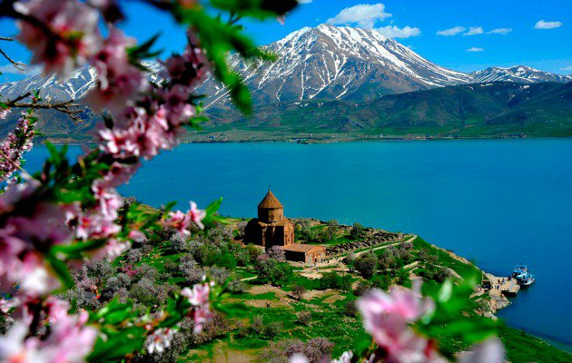

ÜYE OL
GİRİŞ YAP
...
AKDAMAR ADASI
Bu harika adanın Van Gölü üzerinde yer alması beraberinde Van Gölü’ne de ayrı bir önem kazandırmaktadır. Çünkü adayı görmek için gelen yabancı turistler aynı zamanda Van Gölü hakkında da bilgi sahibi olabilmektedir.
Van’ın en göz dolduran manzaralarından birini sunarAkdamar Adası. Adanın içerisindeki Surp Haç Kilisesi ise adanın ismiyle anılmaktadır.Mimari açıdan gözlere hitap eden Akdamar Kilisesi, Kral I. Gagik’in isteği üzerine 915-921 yılları arasında inşa edilmiştir. Mimarı ise Manuel adlı bir kişiye aittir. Akdamar Kilisesi aynı zamanda Ortaçağ Ermeni sanatının en parlak eserleri arasındadır.Kilisenin dış cephesindeki bitki ve hayvan motifleri dikkat çekici detaylar arasında olup, bu mimari eser günümüzde müze olarak düzenlenmiştir.Van Gölü gezisinde görülmesi gereken yerlerin ilk sıralarında yer alan Akdamar Kilisesi, müze olarak ziyaretlerinizi bekliyor.
Bu harika ada birçok batı ülkelerinde önemli bir yere sahiptir. Özellikle de Ermenistan tarihi kaynaklarında Akdamar Adası’nın çok önemli bir konumu bulunmaktadır. Ada üzerinde geçmiş tarihlerde Ermeni bir baş keşişin yaşamış olması beraberinde ülkenin bu harika adaya önem vermesine zemin hazırlamıştır.
Bu adanın bir çok bilinmeyen yönü bulunmaktadır. Bu harika adanın bilinmeyen yönlerinden biri tarihten günümüze kadar çok az ziyaret edilmiş olmasıdır. Bunun ana nedeni ise adanın Van Gölü içerinden yer almasıdır. Bilindiği üzere geçmiş dönemlerde Van Gölü içerisinde dev bir canavarın yaşadığına dair bir efsane bulunmaktaydı.Bu efsane hakkında bilgisi bulunan yabancı turistler can güvenliğinin olmaması nedeniyle Akdamar Adasını ziyaret etme konusunda tereddütler yaşamışlardır. Bu nedenle Akdamar Adası günümüzde bu sebepten dolayı halen daha çok az sayıda ziyaretçi tarafından ziyaret edilmektedir.
Akdamar Adası’nın bilinmeyen yönlerinden biri de üzerinde canlı türünün bulunmamasıdır. Günümüzde birçok adaları yakından incelediğinizde üzerinde en azından börtü böceğin yaşadığını görebilirsiniz. Bu nitelik Akdamar Adası için geçerlilik teşkil etmemektedir. Akdamar Adası’nın bilinmeyen önemli yönlerinden biri de Van Gölü canavarı efsanesinde başrol oynayan canavarın zaman zaman dinlenmek için Akdamar Adasını tercih ettiğidir.
TUR PROGRAMLARI ve ARAÇ KİRALAMA seçenekleri için tıklayınız...
YOL DURUMU
HAVA DURUMU